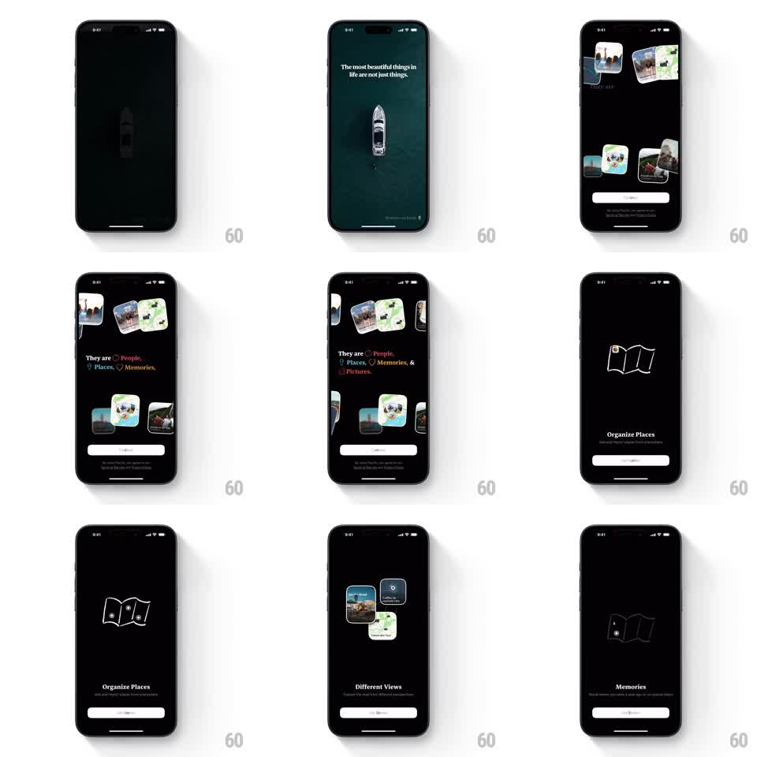

Media
Frame-by-frame

Rebuild this animation 1:1: Placify's intro sequence - staggered headline reveals over drifting photo cards, then feature pages whose line illustrations draw themselves.

Rebuild this animation 1:1: Placify's intro sequence - staggered headline reveals over drifting photo cards, then feature pages whose line illustrations draw themselves. ## Integration Integration: stack-agnostic spec - springs given as stiffness/damping, timed motions as duration + curve; map every value to your framework and animation library of choice. ## Scene Dark onboarding carousel: first a cinematic quote screen (aerial boat photo, serif headline), then a collage of tilted photo cards behind a headline, then minimal feature pages (Organize Places, Different Views, Memories) with a line-art illustration, title, copy, and a Next button. ## Motion spec Pattern: staged intro sequence with drawing illustrations, ~1s per beat. - Quote screen: headline words fade up in stagger (90ms apart, 400ms each) over the dimmed photo. - Collage screen: photo cards float in from the edges to their tilted resting spots (spring stiffness 120 damping 18, 80ms stagger), then hold a slow +-2deg sway. - The headline builds word by word with colored inline icons popping in (scale 0.5 to 1, spring stiffness 320 damping 14). - Feature pages: the line illustration draws itself (stroke reveal, 800ms, ease-in-out), then the title and copy fade up in stagger. - Next button slides between pages; page content exits upward as the new page enters. ## Calibration - Keep each beat's stagger tight and identical - the rhythm is what makes the sequence feel designed. - The drawing stroke must follow the illustration's actual paths, not a mask wipe. ## Reduced motion Everything crossfades; illustrations appear fully drawn. ## Don't miss - The collage cards never stop swaying - static cards make the screen read as a finished layout. - The icon pops are the only springy element in the headline; the words themselves only fade and rise.